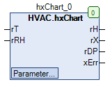

hxChart (FB)¶
FUNCTION_BLOCK hxChart
Kurzbeschreibung¶
Berechnung von Zustandsgrößen der feuchten Luft anhand des Mollier-h,x-DiagrammsGrößen: Enthalpie, Taupunkttemperatur, absolute FeuchtigkeitTypische Anwendung: Berechnung der Taupunkttemperatur in einer Zone
Darstellung¶

Schnittstellen¶
Eingänge¶
Name Datentyp Wertebereich Initialwert Funktion rT REAL -20.0 bis +50.0 Temperatur in Grad Celsius rRH REAL 0.1 bis 100.0 Relative Feuchtigkeit in Prozent
Ausgänge¶
Name Datentyp Wertebereich Initialwert Funktion rH REAL Enthalpie in kJ/kg rX REAL Absolute Feuchtigkeit in Gramm Wasserdampf / Kilogramm trockene Luft rDP REAL Taupunkttemperatur in Grad Celsius xErr BOOL Sammelstörung
Sollwerte / Parameter¶
Name Datentyp Wertebereich Initialwert Funktion rP REAL 800.0 bis 1200.0 980.0 Luftdruck in mbar
Funktionsbeschreibung¶
Allgemeines¶
Dieser Funktionsbaustein dient zur Berechnung wesentlicher Zustandsgrößen der feuchten Luft anhand des Mollier-h,x-Diagramms.
Hierzu sind die aktuellen Werte der Lufttemperatur in Grad Celsius und der relativen Feuchtigkeit in Prozent zu übergeben.
Im Idealfall steht für eine hohe Genauigkeit der aktuelle Luftdruck in mbar zur Verfügung, er kann jedoch durch eine der
Höhenlage des Messorts angepasste Konstante ersetzt werden ( Barometrische Höhenformel ).
Meereshöhe (m) Luftdruck (mbar) Konstante 0 1013 10130 300 980 9800 400 966 9660 600 943 9430 800 921 9210 1000 899 8990 1500 842 8420 2000 795 7950
Wertebereich der Temperatur in Grad Celsius rT
Die Temperatur in Grad Celsius darf nur Werte zwischen -20.0 und +50.0 Grad Celsius ( jeweils einschließlich ) annehmen.
Werte außerhalb des Wertebereichs werden automatisch auf den geeigneten Grenzwert korrigiert.
Wertebereich der relativen Feuchtigkeit in Prozent rRH
Die relative Feuchtigkeit in Prozent darf nur Werte zwischen +0.1 und +100.0 Prozent ( jeweils einschließlich ) annehmen.
Werte außerhalb des Wertebereichs werden automatisch auf den geeigneten Grenzwert korrigiert.
Sammelstörung xErr¶
Dieser Ausgang dient zur Anzeige von Überschreitungen der zulässigen Wertebereiche.
Er wird aktiviert ( = TRUE ), falls die Temperatur in Grad Celsius den Grenzwert -20.0 unterschreitet und / oder den Grenzwert
+50.0 überschreitet. Er wird auch aktiviert, falls die relative Feuchte in Prozent den Grenzwert +0.1 unterschreitet und / oder
den Grenzwert +100.0 überschreitet.
In allen übrigen Situationen ist der Ausgang nicht aktiv ( = FALSE ).
Visualisierung¶
Codesys¶
- InOut:
Scope Name Type Initial Comment Input rT REAL Temperatur in Grad Celsius rRH REAL Relative Feuchtigkeit in Prozent rP REAL 980.0 Luftdruck in mbar Output rH REAL Enthalpie in kJ/kg rX REAL Absolute Feuchtigkeit in Gramm Wasserdampf / Kilogramm trockene Luft rDP REAL Taupunkttemperatur in Grad Celsius xErr BOOL Sammelstörung